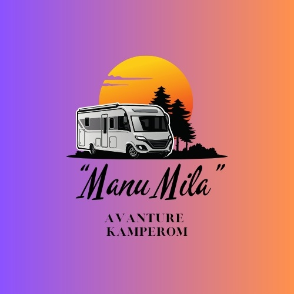

Avanture kamperom ManuMila · Ljeto 2026
Dolomiti & Alpska Jezera
14 dana kamperom kroz najljepše krajeve Europe.
Za obitelj s dvoje djece (12 i 7 god).
14Dana
6Baza
~1.200km ukupno
~€2.630Budžet
↓
Plan skrojen za vašu obitelj
Dvoje roditelja, dvoje djece (12 i 7 godina), jedan kamper — i 14 dana avanture. Svaki dan je prilagođen obiteljskom ritmu: aktivnosti koje pale i mlade i starije, realni tempi bez jurnjave, i uvijek plan B za kišu.
Provjerene cijene
Web-istraživanje, svibanj 2026
Web-istraživanje, svibanj 2026
Testirani kampovi
S ocjenama, cijenama i linkovima
S ocjenama, cijenama i linkovima
Dječje aktivnosti
Na svakom koraku, za obje dobi
Na svakom koraku, za obje dobi
Plan B za kišu
Alternativa za svaki dan
Alternativa za svaki dan
Što vas čeka
 Lago di Braies
Lago di Braies
 Seceda — rub svijeta
Seceda — rub svijeta
 Alpe di Siusi e-bike
Alpe di Siusi e-bike
 Lago di Carezza
Lago di Carezza
 Rosengarten zalazak
Rosengarten zalazak
 Lago di Molveno
Lago di Molveno
Što dobivate
Detaljan plan za svih 14 dana
Kampovi s cijenama i rezervacijskim linkovima
Interaktivna karta s rutom i alternativama
Vremenski raspored, realne procjene vremena
Dječje aktivnosti, vodeni parkovi, tobogani
Kompletni budžet — bez iznenađenja
Produkcija rute: Avanture kamperom ManuMila